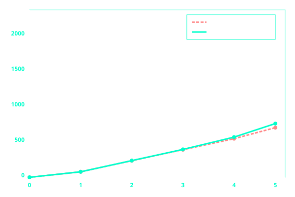

Simple and Compound Interest
Interest is the money paid for borrowing money or the money earned when you save or invest money. There are two main types of interest: simple interest and compound interest.
Before You Begin: Make sure you have reviewed the following topics: Calculating percentages (finding a percentage of a quantity), Converting percentages to decimals (e.g., 5% = 0.05), Ratio and proportion (for comparing interest rates). If you need a refresher, visit our Ratios and Percentages page. Understanding these concepts will help you grasp how interest works and how to apply the formulas correctly.
Simple Interest
Simple interest is calculated only on the original principal (the amount borrowed or invested). The interest earned each year is the same because it is always calculated on the original amount.
The Simple Interest Formula
I = P × r × t
Where:
- I = Interest earned (or paid)
- P = Principal (the original amount borrowed or invested)
- r = Rate of interest per year (written as a decimal)
- t = Time (in years)
Important: The rate r must be converted from a percentage to a decimal. For example, 5% = 5 ÷ 100 = 0.05.
The total amount (A) after simple interest is:
A = P + I or A = P + (P × r × t)
Example 1: Calculating Simple Interest
Calculate the simple interest earned on M2000 invested at 5% per year for 3 years.
Step 1: Identify the values.
P = M2000
r = 5% = 5⁄100 = 0.05
t = 3 years
Step 2: Apply the simple interest formula.
I = P × r × t
I = 2000 × 0.05 × 3
Step 3: Calculate step by step.
2000 × 0.05 = 100
100 × 3 = 300
Step 4: Write the final answer.
I = M300
Answer: The simple interest earned is M300.
Example 2: Finding the Total Amount
M5000 is invested at 8% simple interest per year for 2 years. Find the total amount after 2 years.
Step 1: Identify the values.
P = M5000
r = 8% = 0.08
t = 2 years
Step 2: Calculate the simple interest.
I = 5000 × 0.08 × 2
I = 5000 × 0.08 = 400
I = 400 × 2 = M800
Step 3: Calculate the total amount.
A = P + I = 5000 + 800 = M5800
Answer: The total amount after 2 years is M5800.
Compound Interest
Compound interest is calculated on the principal plus any interest already earned. This means interest is earned on interest. Compound interest grows faster than simple interest because the amount grows each year, and interest is calculated on the new, larger amount.
The Compound Interest Formula
A = P (1 + r)t
Where:
- A = Total amount after interest
- P = Principal (original amount)
- r = Rate of interest per year (written as a decimal)
- t = Time (in years)
The compound interest earned is:
I = A - P
Important: The rate r is added to 1 because you are keeping the original amount (1) and adding the interest rate.
Example 3: Calculating Compound Interest
Calculate the compound interest earned on M2000 invested at 5% per year for 3 years.
Step 1: Identify the values.
P = M2000
r = 5% = 0.05
t = 3 years
Step 2: Apply the compound interest formula.
A = P (1 + r)t
A = 2000 × (1 + 0.05)3
Step 3: Calculate the bracket first.
1 + 0.05 = 1.05
Step 4: Raise to the power of 3.
1.053 = 1.05 × 1.05 × 1.05
1.05 × 1.05 = 1.1025
1.1025 × 1.05 = 1.157625
Step 5: Multiply by the principal.
A = 2000 × 1.157625 = M2315.25
Step 6: Calculate the compound interest.
I = A - P = 2315.25 - 2000 = M315.25
Answer: The compound interest earned is M315.25.
Example 4: Finding the Total Amount
M5000 is invested at 8% compound interest per year for 2 years. Find the total amount after 2 years.
Step 1: Identify the values.
P = M5000
r = 8% = 0.08
t = 2 years
Step 2: Apply the compound interest formula.
A = P (1 + r)t
A = 5000 × (1 + 0.08)2
Step 3: Calculate the bracket first.
1 + 0.08 = 1.08
Step 4: Raise to the power of 2.
1.082 = 1.08 × 1.08 = 1.1664
Step 5: Multiply by the principal.
A = 5000 × 1.1664 = M5832
Answer: The total amount after 2 years is M5832.
Comparing Simple and Compound Interest
The table below shows the growth of M1000 invested at 10% per year using both simple and compound interest.
| Year | Simple Interest (10%) | Compound Interest (10%) |
|---|---|---|
| 1 | M1100 | M1100 |
| 2 | M1200 | M1210 |
| 3 | M1300 | M1331 |
| 4 | M1400 | M1464.10 |
| 5 | M1500 | M1610.51 |
Observation: Compound interest grows faster because you earn interest on the interest already accumulated. After 5 years, compound interest gives M1610.51 compared to M1500 for simple interest, a difference of M110.51.
Graphical Representation of Interest
The data from the table above can be plotted on a graph. The x-axis represents time (years), and the y-axis represents the total amount (Maloti).

Interpreting the Graph:
- Both lines start at the same point (M1000 at year 0).
- The compound interest line (green) curves upward and is always above the simple interest line (red).
- As time increases, the gap between the two lines widens showing that compound interest grows faster.
- The simple interest line is straight because the same amount of interest is added each year.
- The compound interest line curves upward because interest is added to an ever-growing amount.
Summary Table: Simple vs Compound Interest
| Feature | Simple Interest | Compound Interest |
|---|---|---|
| How it works | Interest calculated only on the original principal | Interest calculated on principal + previous interest |
| Formula | I = P × r × t | A = P (1 + r)t |
| Growth over time | Linear (straight line on graph) | Exponential (curved line on graph) |
| Best for | Short-term loans or investments | Long-term savings and investments |
| Example (M1000 at 10% for 5 years) | M1500 | M1610.51 |
NB: When solving interest problems, always check whether the question asks for simple interest or compound interest. For compound interest, make sure you understand how to calculate powers (e.g., 1.053 = 1.05 × 1.05 × 1.05). Remember to convert the rate from a percentage to a decimal before using it in any formula.